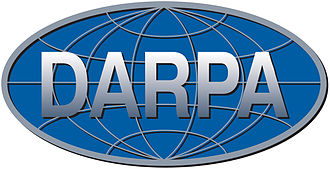

Webbens historia
1968 - 1971
Bruket av snabel-a i e-postadresser, där det på engelska uttalas som "at", avser en avsändare som ligger hos en viss e-postserver. Det bruket infördes 1971 av den amerikanska datorprogrammeraren och e-postpionjären Ray Tomlinson.
Världens första mejl skickas 1971 av Ray Tomlinson. Mejlet skickar han till sig själv, från en dator till en annan som står precis bredvid varandra. Alltsedan dess har mejl varit en av de populäraste kommunikationskanalerna på internet.
Logg av det första meddelande som skickades på Arpanet 29 oktober 1969.

Defense Advanced Research Projects Agency (DARPA; svensk förkortning Darpa) är en amerikansk federal myndighet som sorterar under USA:s försvarsdepartement. Darpas uppdrag är att bedriva och finansiera forskning i syfte att utveckla teknologi för militära ändamål.
Förberedelser och start (1968-1969)
1968 lades grunden för ARPANET då amerikanska försvarsdepartementet (ARPA) efterlyste förslag på nätverksbyggare och företaget BBN (Bolt, Beranek and Newman) fick kontraktet att utveckla nätverket med så kallade IMP-maskiner (Interface Message Processor).
1969 kopplades de fyra första noderna i nätverket ihop: UCLA, Stanford (SRI), UC Santa Barbara och University of Utah. Det första meddelandet skickades mellan UCLA och Stanford i oktober 1969 - men servern kraschade efter bokstäverna "L" och "O".
Utökad funktionalitet och tillväxt (1970-1971)
Under 1970 implementerades det första kommunikationsprotokollet (NCP, Network Control Protocol), vilket gjorde det möjligt för värdar att kommunicera direkt med varandra.
Nätverket började växa snabbt med fler anslutna institutioner och forskningslaboratorier. Vid slutet av 1971 fanns det 18 IMP-noder och 23 värddatorer anslutna.
1971 skickades det allra första mejlet via ARPANET, vilket markerade starten för elektronisk post som kommunikationsmetod.
ARPANET kom nu att fungera som forskarnas nav för innovation och informationsutbyte - och blev ett testområde för nya digitala tjänster och protokoll.
Arpanets betydelse och arv
ARPANET:s utveckling mellan 1968 och 1971 etablerade grundläggande principer för paketväxling och decentraliserad kommunikation.
Nätverkets snabba expansion och tidiga applikationer som e-post blev viktiga milstolpar i utvecklingen av det globala internet.
Forskning och samarbete genom ARPANET ledde till att andra nationer och institutioner började utveckla egna nätverk, vilket på sikt kopplades ihop till internet.
Diagram och nätverkskartor från den tiden visar ARPANET:s tidiga expansion och dess noder.
E-post (1968-1970)
Under perioden 1968 till 1970 fanns e-post inte som en egen kommunikationstjänst, utan istället användes lokala lösningar för att skicka meddelanden mellan användare på samma dator. När ARPANET lanserades 1969 gjorde nätverket det tekniskt möjligt att börja skicka meddelanden mellan datorer på skilda platser - vilket var ett viktigt steg mot egentlig e-post.
Teknisk bakgrund och användning
I början användes nätverken för att utnyttja dyra datorresurser och överföra data eller filer mellan forskare och institutioner.
Att skicka användartillvända meddelanden med information om avsändare, mottagare, datum och ämne, blev snart populärt som en “bieffekt” av datanäten och dess möjligheter.
Själv e-postfunktionen, där meddelanden skickas med unika adresser mellan datorer och användare, utarbetades på ARPANET under denna tid men blev först standard med Ray Tomlinsons program 1971.
Kulturell och organisatorisk utveckling
De institutioner som tidigt var anslutna till ARPANET började spontant bygga vidare på fildelningsfunktioner för att kunna lämna meddelanden till kollegor, exempelvis genom att lägga in textfiler i systemet med “huvuden” som beskrev avsändare och mottagare.
För många användare blev behovet av att kunna kommunicera direkt via datorn snart viktigare än ursprungsidén med nätet; e-postens popularitet bland forskarna tog fart först när tekniken och nätverket fanns på plats.
ARPANETs effekter
ARPANET blev navet för utvecklingen av tidig e-post, eftersom bara ett nätverk mellan datorer kunde göra det möjligt att skicka och ta emot digitala meddelanden över distans.
Vid slutet av perioden kring 1970 hade meddelandefunktionerna ännu ingen standard, men grundtekniken och användarvanorna kom till just tack vare ARPANET. Redan på 1970-talets början lade detta grunden till vidareutvecklingen av e-postsystem och adressering med snabel-a (@).
Sammanfattningsvis var utvecklingen av e-post före 1971 möjlig tack vare ARPANET och användarnas egna initiativ att använda nätverksfunktioner för att skicka personliga meddelanden, även om systemet som vi känner det idag formaliserades först kring 1971.